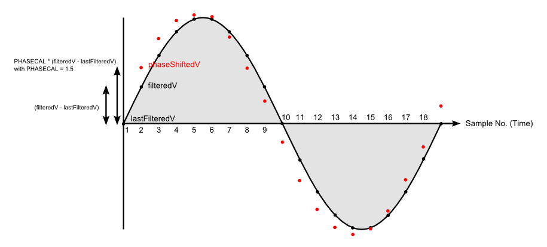
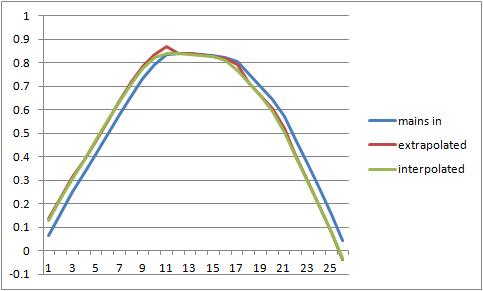

I've always been suspicious of the PHASECAL algorithm (we all learnt at school that extrapolation is dangerous) but a link posted by Robert Wall yesterday encouraged me to look at this building block entry.
It includes this nice diagram...

The red dots show the required phase shifted waveform as calculated by the PHASECAL algorithm.
The graphical equivalent of this function is to draw a line between two adjacent points and then extend the line by half the distance between them. It's clear just looking at the diagram that the result will always be on the outside of the grey shaded area, i.e. always above the black line where the true phase shifted value lies.
The net result of this is that the value given by the PHASECAL algorithm will always be too large and the errors will therefore accumulate. In contrast, if you didn't try to correct at all the errors largely cancel, less than 0.1% error for a 2 degree phase shift.
I contend that the error resulting from using PHASECAL will, at least for some values, be larger than if you hadn't corrected at all. Anyone care to prove me wrong?
Re: does PHASECAL really work?
I know it's a nice diagram, I drew it ;-). But you're wrong when you say "the result will always be on the outside of the grey shaded area". It depends on the value of phasecal that you use, and it isn't always 1.5 as I used to illustrate the effect. If you change the order of reading V and I, phasecal may well come inside the range 0 - 1, in which case it will be interpolating and the result will always be on or under the curve. Proven?
But as has been pointed out previously, when the wave is a true sine wave, only the amplitude is affected, and this can be corrected by recalibrating. But when top of the wave is flattened, then there's a big distortion at the corners, and that's an error that can be mitigated but not removed by recalibrating. (Interpolation rounds the corners, extrapolation makes them stick out - like shoulder pads.)
There's an argument (a good one in my view) for changing the order of the readings to make the value of phasecal as close as possible to the ideal - 0 or 1 - as both these values introduce no distortion at all. The 'standard' value for the shop transducers and example sketch is 1.7. If I remember correctly, reversing the order of readings would bring this down to 0.7, which would give much less distortion, because it's now only 0.3 away from the ideal value. The argument against is the confusion that would arise from having a switch in the library and its proper use.
There's a danger here (if I haven't already done so) of opening up the whole phase shift can of worms. The ideal is zero phase shift from both transducers and truly simultaneous readings of both. The next best is the phase shift of one equals the sum of the phase shift of the other plus the time delay between readings. In both those cases, phasecal wouldn't be needed. Otherwise, you've got to do it the easy way as a time shift in software like this, or the hard way is insert hardware filters to do a real phase shift.
Re: does PHASECAL really work?
If you change the order of reading V and I, phasecal may well come inside the range 0 - 1, in which case it will be interpolating and the result will always be on or under the curve.
Precisely so now all errored values will be too small and the errors will still accumulate. So no, not proven :)
I think that for any value of PHASECAL >0.5 and <1.5 the error in real power will be greater if you correct using the library method than if you just used the raw, unshifted voltage. Even outside this range you'd get a better result by simply using the previous or following voltage sample.
How about that one? :)
It's perfectly possible, given enough CPU power, to phase shift the voltage correctly in software by assuming the voltage is a sine wave and not a straight line, it just takes a bit of trigonometry.
Nothing wrong with opening a can of worms - question everything, that's my motto!
Re: does PHASECAL really work?
Can you explain exactly what you mean with: "errors will still accumulate"? I can't see any mechanism for that to happen, you're not storing the shifted value to use next time. You're changing the amplitude, yes, but that can be corrected provided no other distortion is added to the wave.
Re: does PHASECAL really work?
What I'm trying to say is that over a single cycle all the errored values are either too large (phasecal>1) or too small (phasecal<1) so there is no cancelation at all. All the errors contribute to the overall error in the calculated power.
By contrast, if you don't phase shift the voltage some errored values are too small and some are too large so there's a degree of cancelation and the error in calculated power is smaller.
This is why the power factor for small current leads/lags is small. The instantaneous power swings about but the total power over a cycle is only slightly different to when the PF is 1. Or to put it another way cos(a) is very close to 1 when a is small.
Re: does PHASECAL really work?
(1) The amplitude error is zero at phasecal = 0 and at phasecal = 1. The error curve is a parabola with a negative minimum at 0.5. Notwithstanding that, you're ignoring the fact that the amplitude distortion is consistent and can be corrected by adjusting the calibration?
(2) "This is why the power factor for small current leads/lags is small."
The normal way of analysing a complex phasor is to resolve it on orthogonal axes into real and imaginary parts, so the real component is aligned with the real axis and the imaginary or reactive component with the imaginary axis. If you have a difference in phase shifts between your transducers, you're effectively adding another pair of axes twisted in relation to the first, so you're drawing voltage phasors according to one frame of reference and current phasors with respect to the other.
Using that framework, can you explain a bit further the point you're trying to make?
Re: does PHASECAL really work?
I think you're trying to baffle me with science there Robert but I also think I now understand what you are trying to tell me. Let me put this into my own words and see if you agree...
If we have a perfect system, voltage and current are pure sine waves, the load is purely resistive, neither transformer introduces any phase shift and VCAL and ICAL are correctly set. The only error is the delay between sampling voltage and current.
If we calculated real power in this system we'd get a value that was too small by a factor of cos(current delay angle)
If we then simply applied the phasecal algorithm and recalculated real power we'd still get an incorrect result and the error would be greater than the previous error.
This was the gist of my point.
BUT, and I think this is your point, because all the individual sample errors are in the same direction this latter error can largely be compensated for by changing the amplitude, i.e. by adjusting VCAL.
This is also why it's important to use the phase shifted voltage for the Vrms calculation because VCAL is now incorrect for the raw voltage samples.
Is this correct?
I now just need to convince myself that the amplitude corrected error is smaller than the raw error and I'll be happy.
Re: does PHASECAL really work?
Yes, that's correct but with one proviso: the mains wave isn't a sine wave! I have a sampled mains wave in a spreadsheet - here it is resampled at 53 per cycle. Column B is the raw mains, Column C is the Mascot adapter output. You can run the algorithm on this in the spreadsheet and see what effect the various changes have.
Re: does PHASECAL really work?
Thanks for that Robert, it's interesting to look at real-world data.
I see what you mean about distortion in the corners...

This is for a phasecal value of 1.7 so we would be extrapolating. As you'd expect you get a much better result by interpolating between the following 2 values instead.
This would be easy to do in the library for phasecal values of 1-2 by just using the older current value that is already saved. Something like this...
if(PHASECAL>1) { phaseShiftedV = lastFilteredV + (PHASECAL-1) * (filteredV - lastFilteredV); instP = phaseShiftedV * lastFilteredI; }
else { phaseShiftedV = lastFilteredV + PHASECAL * (filteredV - lastFilteredV); instP = phaseShiftedV * filteredI; }
Re: does PHASECAL really work?
Yep, that looks exactly like the curves I have. Obviously, the more frequent the samples, the more history you need and the less distortion you get because there is less of a gap to fill. The original data was recorded at 44.1 or 48 k samples per second, so can be resampled at any rate (any that the Arduino can keep up with!).
But don't forget, with the v.t. phase shift varying with voltage and the c.t likewise with current, you can only aim for an average correction without unreasonably complicating the algorithm. And you can't get rid of those and remain non-invasive and at reasonable cost and complexity.